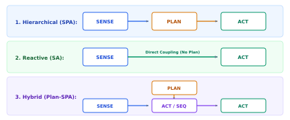
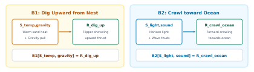
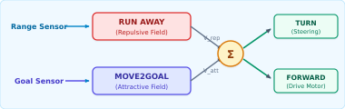
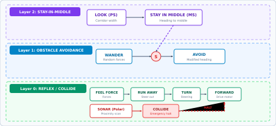
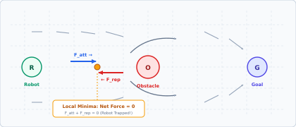

<!DOCTYPE html>
<html lang="en">
<head>
  <meta charset="UTF-8">
  <meta name="viewport" content="width=device-width, initial-scale=1.0">
  <title>Cognitive Robotics Exam Master Cheat Sheet (SCS4202 / IS4109)</title>
  
  <!-- MathJax for rendering exact mathematical formulas -->
  <script src="https://polyfill.io/v3/polyfill.min.js?features=es6"></script>
  <script id="MathJax-script" async src="https://cdn.jsdelivr.net/npm/mathjax@3/es5/tex-mml-chtml.js"></script>
  
  <!-- Modern Clean Typography -->
  <link rel="preconnect" href="https://fonts.googleapis.com">
  <link rel="preconnect" href="https://fonts.gstatic.com" crossorigin>
  <link href="https://fonts.googleapis.com/css2?family=Plus+Jakarta+Sans:wght@400;500;600;700;800&family=JetBrains+Mono:wght@400;500;600&display=swap" rel="stylesheet">
  
  <style>
    :root {
      --bg: #f8fafc;
      --card-bg: #ffffff;
      --text: #1e293b;
      --text-muted: #64748b;
      --border: #e2e8f0;
      --primary: #4f46e5;
      --primary-light: #eef2ff;
      --accent-blue: #0284c7;
      --accent-blue-light: #f0f9ff;
      --accent-emerald: #059669;
      --accent-emerald-light: #ecfdf5;
      --accent-amber: #d97706;
      --accent-amber-light: #fffbeb;
      --accent-purple: #7c3aed;
      --accent-purple-light: #f5f3ff;
      --accent-rose: #e11d48;
      --radius: 12px;
      --radius-sm: 6px;
      --shadow: 0 1px 3px rgba(0,0,0,0.05), 0 1px 2px rgba(0,0,0,0.03);
      --shadow-md: 0 4px 6px -1px rgba(0,0,0,0.06), 0 2px 4px -1px rgba(0,0,0,0.04);
    }
    
    * { box-sizing: border-box; margin: 0; padding: 0; }
    body {
      font-family: 'Plus Jakarta Sans', -apple-system, BlinkMacSystemFont, sans-serif;
      background-color: var(--bg);
      color: var(--text);
      line-height: 1.6;
      -webkit-font-smoothing: antialiased;
    }
    
    .container {
      max-width: 1200px;
      margin: 0 auto;
      padding: 16px 20px 80px 20px;
    }
    
    header {
      background: linear-gradient(135deg, #1e1b4b 0%, #312e81 100%);
      color: white;
      padding: 32px 24px;
      border-radius: var(--radius);
      margin-bottom: 20px;
      box-shadow: var(--shadow-md);
    }
    header h1 {
      font-size: 1.75rem;
      font-weight: 800;
      margin-bottom: 8px;
      letter-spacing: -0.02em;
    }
    header p {
      color: #c7d2fe;
      font-size: 0.95rem;
    }
    
    .nav-bar {
      position: sticky;
      top: 12px;
      z-index: 100;
      background: rgba(255, 255, 255, 0.94);
      backdrop-filter: blur(12px);
      border: 1px solid var(--border);
      padding: 8px 12px;
      border-radius: var(--radius);
      display: flex;
      gap: 8px;
      overflow-x: auto;
      margin-bottom: 24px;
      box-shadow: var(--shadow);
    }
    .nav-bar a {
      text-decoration: none;
      color: var(--text-muted);
      font-size: 0.82rem;
      font-weight: 600;
      padding: 6px 14px;
      border-radius: 20px;
      white-space: nowrap;
      transition: all 0.2s;
      background: var(--bg);
    }
    .nav-bar a:hover {
      color: white;
      background: var(--primary);
    }
    
    .search-box {
      margin-bottom: 24px;
    }
    .search-box input {
      width: 100%;
      padding: 12px 18px;
      border-radius: var(--radius);
      border: 1px solid var(--border);
      font-size: 0.95rem;
      font-family: inherit;
      background: white;
      box-shadow: var(--shadow);
      outline: none;
      transition: border-color 0.2s;
    }
    .search-box input:focus {
      border-color: var(--primary);
    }
    
    .content-section {
      margin-bottom: 36px;
      scroll-margin-top: 80px;
    }
    .section-header {
      display: flex;
      align-items: center;
      gap: 12px;
      margin-bottom: 16px;
      padding-bottom: 8px;
      border-bottom: 2px solid var(--border);
    }
    .section-header h2 {
      font-size: 1.35rem;
      font-weight: 800;
      color: #0f172a;
    }
    
    .card {
      background: var(--card-bg);
      border-radius: var(--radius);
      padding: 20px;
      margin-bottom: 16px;
      box-shadow: var(--shadow);
      border: 1px solid var(--border);
    }
    .card h3 {
      font-size: 1.1rem;
      font-weight: 700;
      color: #0f172a;
      margin-bottom: 12px;
      padding-bottom: 6px;
      border-bottom: 1px solid #f1f5f9;
    }
    .card h4 {
      font-size: 0.95rem;
      font-weight: 700;
      color: #334155;
      margin: 14px 0 8px 0;
    }
    .card h5 {
      font-size: 0.88rem;
      font-weight: 700;
      color: #475569;
      margin: 12px 0 6px 0;
    }
    
    p { margin-bottom: 10px; font-size: 0.9rem; }
    ul, ol { margin-left: 20px; margin-bottom: 12px; font-size: 0.9rem; }
    li { margin-bottom: 6px; }
    strong { color: #0f172a; font-weight: 700; }
    
    .callout {
      background: var(--accent-amber-light);
      border-left: 4px solid var(--accent-amber);
      padding: 12px 16px;
      border-radius: 0 var(--radius-sm) var(--radius-sm) 0;
      margin: 14px 0;
      font-size: 0.88rem;
      color: #78350f;
    }
    .callout-warning {
      background: #fff1f2;
      border-left: 4px solid var(--accent-rose);
      color: #9f1239;
    }
    
    .table-container {
      overflow-x: auto;
      margin: 14px 0;
      border-radius: var(--radius-sm);
      border: 1px solid var(--border);
    }
    table {
      width: 100%;
      border-collapse: collapse;
      font-size: 0.85rem;
      text-align: left;
    }
    th {
      background: #f1f5f9;
      color: #334155;
      font-weight: 700;
      padding: 10px 14px;
      border-bottom: 1px solid var(--border);
    }
    td {
      padding: 10px 14px;
      border-bottom: 1px solid var(--border);
      background: white;
    }
    tr:last-child td { border-bottom: none; }
    tr:nth-child(even) td { background: #f8fafc; }
    
    pre {
      background: #0f172a;
      color: #f8fafc;
      padding: 14px 18px;
      border-radius: var(--radius-sm);
      overflow-x: auto;
      font-family: 'JetBrains Mono', monospace;
      font-size: 0.82rem;
      margin: 12px 0;
      line-height: 1.5;
    }
    code {
      font-family: 'JetBrains Mono', monospace;
      font-size: 0.85em;
      background: #e2e8f0;
      color: #0f172a;
      padding: 2px 5px;
      border-radius: 4px;
    }
    pre code {
      background: transparent;
      color: inherit;
      padding: 0;
    }
    
    .diagram-box {
      background: #ffffff;
      border: 1px solid var(--border);
      border-radius: var(--radius-sm);
      padding: 14px;
      margin: 14px 0;
      text-align: center;
    }
    .diagram-box img {
      max-width: 100%;
      height: auto;
      border-radius: 4px;
    }
    .diagram-caption {
      font-size: 0.78rem;
      color: var(--text-muted);
      margin-top: 8px;
      font-weight: 600;
    }
    
    .math-box {
      background: #f8fafc;
      border: 1px solid #cbd5e1;
      border-radius: var(--radius-sm);
      padding: 10px 16px;
      margin: 10px 0;
      text-align: center;
    }
    
    @media (max-width: 768px) {
      .container { padding: 10px 12px 60px 12px; }
      header { padding: 20px 16px; }
      header h1 { font-size: 1.35rem; }
      .card { padding: 14px; }
      th, td { padding: 8px 10px; font-size: 0.8rem; }
    }
  </style>
</head>
<body>

  <div class="container">
    <header>
      <h1>🤖 Cognitive Robotics (SCS4202 / IS4109)</h1>
      <p>Comprehensive Exam Cheat Sheet & Past Paper Solutions (2021 – 2025)</p>
    </header>

    <div class="nav-bar">
      <a href="#the-4-question-exam-blueprint">🎯 Blueprint</a>
      <a href="#question-1-foundational-concepts-sensing--hardware">📘 Q1: Foundational & Sensors</a>
      <a href="#question-2-agency-behaviors-and-schema-theory">⚙️ Q2: Agency & Schemas</a>
      <a href="#question-3-perception-biological-mechanisms-and-behavior-acquisition">🦅 Q3: Perception & IRM</a>
      <a href="#question-4-behavioral-coordination--multi-robot-systems">📈 Q4: Potential Fields & MRS</a>
      <a href="#step-by-step-mathematical-guide-mrs-task-allocation-auctions">🧮 Math Matrix Solutions</a>
      
    </div>

    <div class="search-box">
      <input type="text" id="searchInput" placeholder="🔍 Search any concept, equation, or past paper problem..." onkeyup="filterContent()">
    </div>

    <div id="cheatSheetContent">
      <h1 class="main-title">🤖 Cognitive Robotics (SCS4202 / IS4109) - Comprehensive Exam Cheat Sheet</h1>

<p>This master study sheet integrates all required concepts, mathematical formulas, biological models, pseudocode implementations, and step-by-step mathematical solutions from the <strong>Cognitive Robotics</strong> past papers (<strong>Robotics 2021</strong> to <strong>Robotics 2025</strong>) and associated lectures [8, 9, 21, 23, 28, 30].</p>


</div></section><section class="content-section"><div class="section-header"><h2>🎯 The 4-Question Exam Blueprint</h2></div><div class="section-body">
<p>The Cognitive Robotics exam maintains a highly structured, predictable pattern every year. Studying according to this blueprint guarantees complete coverage of the exam [8, 9, 21, 23, 28, 30]:</p>
<ul>
<li><strong>Question 1: Foundational Concepts, Sensing & Hardware</strong> (Lectures 1 & 2)</li>
<li><strong>Question 2: Agency, Behaviors, and Schema Theory</strong> (Lectures 3 & 6)</li>
<li><strong>Question 3: Perception, Biological Mechanisms, and Behavior Acquisition</strong> (Lectures 4, 5, & 6)</li>
<li><strong>Question 4: Behavioral Coordination (Potential Fields) & Multi-Robot Systems (MRS)</strong> (Lecture 7 & Multi-Robot Slides)</li>
</ul>


</div></section><section class="content-section"><div class="section-header"><h2>📘 Question 1: Foundational Concepts, Sensing & Hardware</h2></div><div class="section-body">

</div><div class="card"><h3>1.1 Defining "Robot" and "Robotics"</h3>
<ul>
<li><strong>Robot:</strong> An electromechanical device that is <strong>reprogrammable</strong>, <strong>multifunctional</strong>, and <strong>sensible for the environment</strong> [1].</li>
<li><strong>Robotics:</strong> The study and application of robot technology [2].</li>
<li><strong>Telerobotics:</strong> Robot systems that are operated remotely [2].</li>
</ul>

</div><div class="card"><h3>1.2 Automation vs. Robots</h3>
<ul>
<li><strong>Industrial Automation:</strong> Machinery designed to carry out a <strong>specific, single task</strong> (e.g., a bottling machine, dishwasher, or paint sprayer) [1]. It is always better and more efficient than a robot for that particular task because it is optimally designed for it [1].</li>
<li><strong>Robots:</strong> Machinery designed to carry out a <strong>variety of tasks</strong> (e.g., pick-and-place arms, mobile robots, and CNC machines) [2].</li>
</ul>

</div><div class="card"><h3>1.3 Asimov's Laws of Robotics & Ethical Scenarios</h3>
<ol>
<li><strong>Law 1:</strong> A robot may not injure a human being or, through inaction, allow a human being to come to harm [2].</li>
<li><strong>Law 2:</strong> A robot must obey orders given to it by human beings, except where such orders would conflict with the First Law [2].</li>
<li><strong>Law 3:</strong> A robot must protect its own existence as long as such protection does not conflict with the First or Second Law [2].</li>
<li><strong>Law Zero (Asimov's addition):</strong> A robot may not injure humanity, or, through inaction, allow humanity to come to harm [19]. <em>Note: Law Zero overrides Laws 1, 2, and 3</em> [19].</li>
</ol>

<h4>⚖️ Exam Scenario Analysis:</h4>
<ul>
<li><strong>Scenario 1: Ordered to kill the President of the country.</strong></li>
</ul>
    <em>   </em>Decision:* <strong>Refuse the order.</strong>
    <em>   </em>Justification:* Law One strictly prohibits injuring a human [2]. Law Two dictates obeying orders except when they conflict with Law One [2].
<ul>
<li><strong>Scenario 2: Ordered to kill a terrorist who is planning to blast a bomb in a crowd.</strong></li>
</ul>
    <em>   </em>Decision:* <strong>Obey and neutralize the terrorist.</strong>
    <em>   </em>Justification:* Under Law One, "inaction" allowing a crowd to come to harm is a violation [2]. However, killing one human to save many creates a logical conflict within Law One itself. This is resolved by <strong>Law Zero</strong> [19]. Since blasting a bomb harms humanity (the crowd), the robot must kill the terrorist to protect humanity [19].

</div><div class="card"><h3>1.4 Proprioceptive (Internal) vs. Exteroceptive (External) Sensing</h3>
<ul>
<li><strong>Proprioceptive (Internal State):</strong> Monitors the robot's own internal mechanical and electrical parameters (e.g., battery levels, joint angles, velocity, orientation) [30].</li>
</ul>
    <em>   </em>Examples:* Odometry sensors (encoders), gyroscopes, accelerometers, tachometers [56].
<ul>
<li><strong>Exteroceptive (External State):</strong> Monitors and measures parameters of the surrounding environment (e.g., obstacles, light, temperature, sound) [30].</li>
</ul>
    <em>   </em>Examples:* Cameras, LIDAR, sonar/ultrasonic sensors, contact whiskers [56].
<em>   </em>Scenario Case Study:* A vaccinating robot navigating a contaminated zone.
    <em>   </em>Internal State:* Battery voltage sensors, wheel encoders (to track displacement) [30].
    <em>   </em>External State:* LIDAR/sonar (to detect obstacles), GPS (to track coordinates) [56].

</div><div class="card"><h3>1.5 Active vs. Passive Sensing</h3>
<ul>
<li><strong>Active Sensors:</strong> Emit energy (electromagnetic waves, light, or sound) into the environment and measure the reflected signal [56].</li>
</ul>
    <em>   </em>Examples:* Modulated infrared, active ultrasonic, LIDAR, radar [56].
<ul>
<li><strong>Passive Sensors:</strong> Detect ambient energy already present in the environment without emitting any [56].</li>
</ul>
    <em>   </em>Examples:* Cameras (visible light), Passive Infrared (PIR) pyroelectric sensors (body heat), photocells (ambient light) [56, 63].

</div><div class="card"><h3>1.6 Deep Dive: Specialized Robotic Sensors</h3>

<h4>A. Touch & Contact Sensors (Feelers)</h4>
<ul>
<li><strong>Mechanical Whiskers:</strong> A flexible wire suspended inside a conductive metal hoop. Contact with an obstacle deflects the wire, closing the circuit [56]. Simple, cheap, and outputs a <strong>binary (0 or 1)</strong> signal [56].</li>
<li><strong>Bumpers:</strong> Rigid plates mounted on microswitches [56]. Physical collision forces the frame inward, pressing the switch [56].</li>
</ul>

<h4>B. Capacitive vs. Inductive Proximity Sensors</h4>
<ul>
<li><strong>Capacitive Sensors:</strong> Operate based on changes in capacitance between the sensor plates and the target [57, 58].</li>
</ul>
    <em>   </em>Detection:* Can detect both <strong>conductive (metals) and non-conductive</strong> materials (plastics, liquids, wood) [58]. Can sense through non-metallic barriers [59].
    <em>   </em>Cons:* Very short range (centimeters), highly sensitive to humidity and dust [59].
<ul>
<li><strong>Inductive Sensors:</strong> Operate based on alternating magnetic fields inducing <strong>eddy currents</strong> in metallic targets, changing the coil's inductance [60, 61].</li>
</ul>
    <em>   </em>Detection:* Can detect <strong>metals only</strong> (highly sensitive to ferrous metals, less to non-ferrous) [61, 62].
    <em>   </em>Pros:* Extremely robust; completely unaffected by non-metallic contaminants (oil, dust, water) [61, 62]. Shorter range than capacitive (millimeters) [61, 62].

<h4>C. Infrared (IR) Sensing Technologies</h4>
<ol>
<li><strong>Intensity-Based IR (Reflective):</strong> Emitter LED + phototransistor/receiver [65]. Measures the raw intensity of reflected light [64].</li>
</ol>
    <em>   </em>Drawbacks:* Highly sensitive to ambient lighting, object surface color, and distance [65]. Black/dull objects do not reflect well [63].
    <em>   </em>Applications:* Line following, wall tracking, optical break-beam encoders [65].
<ol>
<li><strong>Modulated IR (Proximity):</strong> Emitter LED flashes at a specific frequency (<strong>32kHz to 45kHz</strong>), and the receiver demodulates only that frequency [66].</li>
</ol>
    <em>   </em>Pros:* <strong>Completely immune to ambient light</strong> and color reflective differences [66].
    <em>   </em>Applications:* Reliable obstacle detection, remote controllers [66].
<ol>
<li><strong>Triangulation IR (Distance/Ranging):</strong> Emits an IR beam; a lens focuses the reflected spot onto a Position Sensitive Detector (PSD) [67]. The distance is calculated geometrically from the angle of reflection [67].</li>
</ol>
    <em>   </em>Pros:* Highly immune to ambient light, color, and target reflectivity [64, 68].
    <em>   </em>Example:* Sharp GP2D02 IR Ranger (range: 10cm–80cm) [68].

<h4>D. LIDAR (Laser Range Finder)</h4>
<em>   </em>Capabilities:* Long range (<strong>2m to 500m</strong>), high resolution (10mm), wide field of view (100°–180°), immune to fog, dust, and light disturbances [68].

<h4>E. Ultrasonic Sensors (Sonar)</h4>
<em>   </em>Operating Principle:* Emits a high-frequency acoustic pulse (<strong>40kHz–50kHz</strong>) and measures the round-trip elapsed flight time (\(t\)) [155].
<em>   </em>Distance Equation:*
<p>    <div class="math-box">\[D = rac{v \cdot t}{2}\]</div></p>
<p>    Where \(v\) is the speed of sound propagation in air (\(pprox 340 	ext{ m/s}\)) [155]. It is divided by 2 because the measured time (\(t\)) is for the round-trip journey [155].</p>
<em>   </em>Four Major Limitations (Must know for exam!):*
<ol>
<li><strong>Bearing (Angular) Uncertainty:</strong> Sonar has a <strong>30-degree arc of uncertainty</strong>. The object can be anywhere within that 30° cone [156, 157].</li>
<li><strong>Specular Reflection & Angled Surfaces:</strong> Angled walls reflect the acoustic waves <em>away</em> from the sensor, failing to return an echo to the receiver [155].</li>
<li><strong>Acoustic Absorption:</strong> Soft, fibrous, or fuzzy objects absorb sound waves and do not return an echo [155].</li>
<li><strong>Crosstalk:</strong> Multiple ultrasonic sensors on the same or neighboring robots can trigger each other, leading to false range readings [157].</li>
<li><strong>Speed of Propagation Latency:</strong> Sound is slow (\(340 	ext{ m/s}\)). For a 30m scan (60m round-trip), it takes <strong>200 milliseconds</strong> [157].</li>
</ol>

</div><div class="card"><h3>1.7 Robot Programming Methodologies</h3>

<h4>A. Online Programming (Direct Robot Interaction)</h4>
<ul>
<li><strong>Teach Pendant:</strong> Handheld control box used to manually move the robot joints [200]. Points are recorded and sequentially played back [200]. Excellent for simple point-to-point operations [200].</li>
<li><strong>Lead-Through Programming:</strong> The programmer physically guides the robotic arm through a path [200]. A sampling routine records joint coordinates at a high rate (<strong>60 to 80 times per second</strong>) [200].</li>
</ul>
    <em>   </em>Pros:* Playback results in smooth, continuous motion curves [200].
    <em>   </em>Cons:* Requires massive memory storage due to the high sampling frequency [200].

<h4>B. Offline Programming (Software-Based)</h4>
<ul>
<li><strong>Robot Programming Languages:</strong> Code is written in dedicated text environments (e.g., AML, VAL, RAIL, RobotStudio) [201].</li>
</ul>
    <em>   </em>Pros:* Allows interfacing with sensors to adjust paths in real-time, computes coordinates using virtual geometries, and allows off-line task planning [201].
    <em>   </em>Cons:* No industry standard exists; every manufacturer uses proprietary languages [201].

</div><div class="card"><h3>1.8 EV3 Classroom Block Diagram Logic</h3>
<ul>
<li>Exam questions frequently present a scratch-like LEGO Mindstorms EV3 Classroom code block and require you to draw a corresponding <strong>System Flowchart</strong> [229].</li>
</ul>
<em>   </em>Key Translation Patterns:*
<ul>
<li>`forever` loop $</li>
</ul>
<p>ightarrow$ Infinite outer loop [229].</p>
<ul>
<li>`if-else` block $</li>
</ul>
<p>ightarrow$ Decision diamonds (`Is Sensor 1 Pressed?`) with `Yes` and `No` branches [229].</p>
<ul>
<li>`move right 60 for 3 rotations at 50% speed` $</li>
</ul>
<p>ightarrow$ Process box representing motor command actions [229].</p>


</div></section><section class="content-section"><div class="section-header"><h2>⚙️ Question 2: Agency, Behaviors, and Schema Theory</h2></div><div class="section-body">

</div><div class="card"><h3>2.1 Robotic Architectural Paradigms & Primitive Relations</h3>
<p>Robotic control is split into three main paradigms defined by the relationships between the three primitives: <strong>SENSE</strong>, <strong>PLAN</strong>, and <strong>ACT</strong> [8].</p>

<div class="diagram-box"><div class="diagram-caption">Vector Diagram: Hierarchical (SPA) vs Reactive (SA) vs Hybrid (Plan-SPA)</div></div>

<ol>
<li><strong>Hierarchical / Deliberative Paradigm (SPA):</strong></li>
</ol>
    <em>   </em>Core Principle:* The robot Senses the world, constructs a monolithic <strong>Global World Model (map)</strong>, Plans all actions to the goal, and then Acts [8].
    <em>   </em>Limitation (Frame Problem):* The global world model is extremely slow to update, making deliberative robots slow, fragile to environment changes, and prone to frequent recalculations [11].
    <em>   </em>Historic Example:<em> <strong>Shakey</strong> (SRI, 1967), which used the <strong>STRIPS</strong> algorithm and </em>means-ends analysis* to recursively satisfy preconditions before executing actions [9].
<ol>
<li><strong>Reactive Paradigm (SA):</strong></li>
</ol>
    <em>   </em>Core Principle:* Direct coupling of Sense to Act with <strong>no planning layer</strong> [8].
    <em>   </em>Architecture:* Vertical decomposition where multiple behaviors run in parallel [11, 230]. Higher layers can <strong>subsume</strong> (suppress or inhibit) lower layers [230].
    <em>   </em>Example:* Rodney Brooks' <strong>Subsumption Architecture</strong> [11].
<ol>
<li><strong>Hybrid Paradigm (Plan-SPA):</strong></li>
</ol>
    <em>   </em>Core Principle:* Combining the responsiveness of reactive layers with the goal-directed focus of deliberation [133].
    <em>   </em>Structure:* Standard 3-Layer architecture (Deliberative Layer, Sequencer Layer, and Reactive Execution Layer) [133].

</div><div class="card"><h3>2.2 Marr's Three Levels of Information-Processing Systems</h3>
<p>David Marr's neuroscientific framework analyzes how agency is computed, represented, and physically realized [3]:</p>
<ol>
<li><strong>Level 1: Computational Level (Theory):</strong> <em>What</em> is the system trying to achieve? <em>What</em> is the mathematical goal of the task? [4]</li>
<li><strong>Level 2: Algorithmic Level (Representation):</strong> <em>How</em> is this task represented in terms of inputs, outputs, and mathematical transforms? What are the decision-making rules? [4]</li>
<li><strong>Level 3: Implementational Layer (Physical Realization):</strong> <em>How</em> is it physically constructed? (e.g., biological neurons vs. robotic microcontrollers and motor drivers) [4, 8].</li>
</ol>

<h4>🦟 Marr's Framework Case Study: Mosquito vs. Search & Rescue (S&R) Robot [6]:</h4>
<em>   </em>Mosquito:*
<ul>
<li><strong>Level 1 (Computational):</strong> Locate a warm-blooded host for feeding [5].</li>
<li><strong>Level 2 (Algorithmic):</strong> Thermotaxis (steering toward heat) + chemotaxis (following CO₂ gradients) [5].</li>
<li><strong>Level 3 (Implementational):</strong> Olfactory receptors, thermal pit organs, flight muscles, biological brain [5].</li>
</ul>
<em>   </em>S&R Robot:*
<ul>
<li><strong>Level 1 (Computational):</strong> Locate trapped survivors inside a collapsed building [5].</li>
<li><strong>Level 2 (Algorithmic):</strong> Vector summing steering wheel angles based on thermal camera centroids and CO₂ gas concentration readings [5].</li>
<li><strong>Level 3 (Implementational):</strong> FLIR thermal sensor, chemical CO₂ sensor, differential drive motors, ARM microcontroller [5].</li>
</ul>

<div class="callout">⚠️ <strong>Exam Note:</strong> Levels 1 and 2 are completely abstract and can apply to both biological and artificial agents [6]. It is <strong>only at Level 3</strong> that the differences between robotic and biological systems emerge [6].</div>

</div><div class="card"><h3>2.3 Biological Inspiration to Robotic Mappings [6]</h3>
<ul>
<li><strong>Bat Echolocation</strong> $</li>
</ul>
<p>ightarrow$ <strong>Obstacle Avoidance Robot:</strong> Algorithmic echo-delay detection mapped onto active ultrasonic distance sensors [6].</p>
<ul>
<li><strong>Ant Foraging</strong> $</li>
</ul>
<p>ightarrow$ <strong>Swarm Robot Pathfinding:</strong> Algorithmic Ant Colony Optimization (ACO) mapped onto digital coordinate shared trail maps [6].</p>
<ul>
<li><strong>Bird Flocking</strong> $</li>
</ul>
<p>ightarrow$ <strong>Coordinated Drone Swarm:</strong> Boids rules (Cohesion, Alignment, Separation) mapped onto local UAV range sensors [6].</p>
<ul>
<li><strong>Frog's Tongue Reflex</strong> $</li>
</ul>
<p>ightarrow$ <strong>Robotic Grabbing Arm:</strong> High-speed motion tracking and threshold-trigger snap mapped onto visual servoing robotic arms [6].</p>
<ul>
<li><strong>Cuttlefish Camouflage</strong> $</li>
</ul>
<p>ightarrow$ <strong>Adaptive Surface Robot:</strong> Image pattern mapping algorithms realized on high-resolution cameras and flexible color-changing E-skins [6].</p>

</div><div class="card"><h3>2.4 Biological Behavior Classifications [206]</h3>
<ol>
<li><strong>Reflexive Behavior:</strong> Pure stimulus-response (S-R) direct mapping with no learned memory [206].</li>
</ol>
    <em>   </em>Taxes:* Orienting relative to a stimulus (e.g., Baby turtles exhibiting positive phototaxis towards the bright ocean horizon) [12, 241].
    <em>   </em>Fixed-Action Pattern (FAP):* Response continues much longer than the stimulus (e.g., spider spinning a web, bird courtship dance) [12, 241].
<ol>
<li><strong>Reactive Behavior:</strong> Learned through repetition and consolidated into automatic "muscle memory" where conscious intervention degrades performance (e.g., riding a bicycle) [206].</li>
<li><strong>Conscious Behavior:</strong> Deliberative, highly cognitive activities (e.g., planning a path, assembling a kit) [206].</li>
</ol>

</div><div class="card"><h3>2.5 Schema Theory in Object-Oriented Programming (OOP) [244]</h3>
<ul>
<li><strong>Behavioral Schema:</strong> A primitive behavior is modeled in OOP as a single class containing exactly one <strong>Perceptual Schema</strong> and one <strong>Motor Schema</strong> [246].</li>
<li><strong>Perceptual Schema:</strong> Extracts relevant "percepts" from raw sensor data (e.g., detecting a small moving blob) [19, 246].</li>
<li><strong>Motor Schema:</strong> Generates the corresponding action vector based on that percept [19, 246].</li>
<li><strong>Schema Instantiation (SI):</strong> A generic schema template class is parameterized with specific runtime properties (e.g., size, speed, target color) to create a specific active object [245].</li>
</ul>

<h4>📐 S-R Schema Mathematical Notation:</h4>
<ul>
<li>Standard:</li>
</ul>
<p>    <div class="math-box">\[\{B : S 
ightarrow R\}\]</div></p>
<p>    Where \(B\) is the behavior, \(S\) is stimulus, and \(R\) is response [247].</p>
<ul>
<li>Functional:</li>
</ul>
<p>    <div class="math-box">\[B[S] = R\]</div></p>
<p>    Where $S(	ext{Sensor Data}) </p>
<p>ightarrow 	ext{Percept}\( and \)R(	ext{Percept}) </p>
<p>ightarrow 	ext{Action Vector}$ [248].</p>

<h4>🥚 Case Study: Baby Turtle Nest Hatching Schemas (Robotics 2025) [280]:</h4><div class="diagram-box"><div class="diagram-caption">Vector Schema: Digging Upward (B1) vs Crawling to Ocean (B2)</div></div>
<ul>
<li><strong>B1: Warm sand and instinct cause them to dig upward and emerge.</strong></li>
</ul>
    <em>   </em>Stimulus:* Geothermal heat gradient (warm sand) + Gravity vectors [280].
    <em>   </em>Response:* Digging upward [280].
    <em>   </em>Perceptual Schema (\(S\)):* Evaluates temperature gradient (thermotaxis) and gravitational pull (negative geotaxis) [241, 280].
    <em>   </em>Motor Schema (\(R\)):* Generates flipper-shoveling action vectors directed upward along the temperature gradient [280].
    <em>   </em>Mathematical Schema Notation:*
<p>        <div class="math-box">\[B_1[S_{	ext{temp, gravity}}] = R_{	ext{dig\_up}}\]</div></p>
<ul>
<li><strong>B2: On the surface, they see the bright horizon, hear the waves, and crawl toward the ocean.</strong></li>
</ul>
    <em>   </em>Stimulus:* Bright horizon light reflecting off the water + low-frequency acoustic wave sounds [280].
    <em>   </em>Response:* Crawling towards the light/sound [280].
    <em>   </em>Perceptual Schema (\(S\)):* Pinpoints the brightest light vector on the horizon (phototaxis) and locates the direction of low-frequency wave thuds (phonotaxis) [241, 280].
    <em>   </em>Motor Schema (\(R\)):* Generates crawling thrust vector directed towards the combined light and sound vector [280].
    <em>   </em>Mathematical Schema Notation:*
<p>        <div class="math-box">\[B_2[S_{	ext{light, acoustics}}] = R_{	ext{crawl\_to\_ocean}}\]</div></p>


</div></section><section class="content-section"><div class="section-header"><h2>🦅 Question 3: Perception, Biological Mechanisms, and Behavior Acquisition</h2></div><div class="section-body">

</div><div class="card"><h3>3.1 The Action-Perception Cycle & Affordances</h3>
<ul>
<li><strong>Action-Perception Cycle:</strong> Continuous feedback loop where actions modify the environment, altering sensory inputs, which in turn drive subsequent actions [220].</li>
<li><strong>Gibsonian Ecological Psychology:</strong> Direct perception where sensory inputs directly provide "action meanings" without requiring complex cognitive modeling [6, 220]. <strong>"The world is its own best representation"</strong> [30].</li>
<li><strong>Affordances:</strong> Directly perceivable action opportunities offered by objects [6, 220].</li>
</ul>
    <em>   </em>Visual Affordances:* <strong>Optic Flow</strong> (expanding visual field vectors indicating self-motion or time-to-contact) [220].
    <em>   </em>Non-Visual Affordances:* Sensed via acoustics (e.g., knowing a fuel tank is almost full by the hollow pitching sound of the liquid without looking inside) [220].

</div><div class="card"><h3>3.2 Four Methods of Acquiring Behaviors [255, 256, 257]</h3>
<ol>
<li><strong>Innate:</strong> Completely hardwired at birth (e.g., Arctic Tern chick pecking at a red blob when hungry) [13, 255].</li>
<li><strong>Sequence of Innate Behaviors:</strong> Logical chain of innate steps where the environment and internal state act as triggers for the next stage (e.g., digger wasp mating $</li>
</ol>
<p>ightarrow\( building nest \)</p>
<p>ightarrow$ laying eggs) [255].</p>
<ol>
<li><strong>Innate with Memory:</strong> Born with innate behaviors that require a memory-initialization phase to calibrate (e.g., honeybees performing innate exploration spiral loops to memorize their specific hive's visual appearance from all approach angles) [256].</li>
<li><strong>Learned:</strong> Entirely acquired during the agent's life through trial-and-error, reinforcement, or imitation [257].</li>
</ol>

</div><div class="card"><h3>3.3 Innate Releasing Mechanisms (IRM)</h3>
<ul>
<li><strong>IRM:</strong> A control filter that turns a specific behavior on or off [258].</li>
<li><strong>Releaser:</strong> A <strong>boolean latch</strong> that gates a behavior [258]. If `releaser == NOT_PRESENT`, the behavior is locked; it processes no inputs and produces no default output [258, 259].</li>
<li><strong>Compound Releasers:</strong> Releasers that combine external environmental signals (e.g., presence of food) with internal motivation states (e.g., hunger level) [260].</li>
</ul>

</div><div class="card"><h3>3.4 IRM Control Architectures</h3>
<ol>
<li><strong>Inhibition (If-Else):</strong> Stops intermittent flipping between competing behaviors (e.g., prevents a squirrel from fleeing for 1s, then feeding for 1s) by locking out other behaviors [261, 262].</li>
<li><strong>Fixed-Pattern Duration (\(T\)):</strong> Ensures that when a critical behavior (such as Fleeing) is triggered, it runs uninterrupted for a fixed duration \(T\) even if the initial releaser disappears [262].</li>
<li><strong>Implicit Chaining:</strong> Sequential execution where the output of one behavior naturally triggers the releasers of the next behavior, creating complex sequences without a central planner [215, 216].</li>
</ol>


</div><div class="card"><h3>📝 Exam Pseudocode Practice: Core Biological Scenarios</h3>

<h4>Scenario A: Arctic Tern Beak Pecking (Robotics 2023) [273, 274]</h4>
<ul>
<li><strong>Context:</strong> Babies peck the bright reddish beak of parents to trigger regurgitation [254]. Babies do not recognize parents per se; they simply peck the nearest largest red blob when hungry [13, 254].</li>
<li><strong>IRM Latch Identification:</strong></li>
</ul>
    <em>   </em>Baby Tern:*
<ul>
<li>`Input:` Visual coordinates of the largest red blob [254].</li>
<li>`Output:` Pecking motion [254].</li>
<li>`Releaser (Internal):` `IsHungry` (true/false) [13].</li>
</ul>
    <em>   </em>Parent Tern:*
<ul>
<li>`Input:` Tactile beak-pecking sensation [254].</li>
<li>`Output:` Feed/Regurgitate [254].</li>
<li>`Releasers (External & Internal):` `IsHungry` (tactile peck) + `NoPredators` + `HasFood` [273].</li>
</ul>

<p><pre><code class="language-cpp">//\ Parental\ Behavior\ Implicit\ Sequence\ /\ Latching\ Model\
enum\ Releaser\ \{\ PRESENT,\ NOT_PRESENT\ \};\
\
void\ ParentTernControlLoop()\ \{\
\ \ \ \ while\ (TRUE)\ \{\
\ \ \ \ \ \ \ \ //\ High\-Priority\ Avoidance\ (Brooks\ Subsumption\ Principle)\
\ \ \ \ \ \ \ \ if\ (SensePred()\ ==\ PRESENT)\ \{\
\ \ \ \ \ \ \ \ \ \ \ \ Flee();\ //\ Flees\ for\ 10\ seconds\ (Inhibits\ all\ lower\ behaviors)\
\ \ \ \ \ \ \ \ \ \ \ \ continue;\
\ \ \ \ \ \ \ \ \}\
\
\ \ \ \ \ \ \ \ //\ Secondary\ Priority\ \-\ Feeding\
\ \ \ \ \ \ \ \ if\ (SenseHun()\ ==\ PRESENT)\ \{\ //\ Tactile\ beak\ pecking\ detected\
\ \ \ \ \ \ \ \ \ \ \ \ if\ (SenseFood()\ ==\ PRESENT)\ \{\ //\ Has\ gathered\ food\
\ \ \ \ \ \ \ \ \ \ \ \ \ \ \ \ Feed();\ //\ Regurgitate\ food\ for\ chicks\
\ \ \ \ \ \ \ \ \ \ \ \ \}\ else\ \{\
\ \ \ \ \ \ \ \ \ \ \ \ \ \ \ \ SearchForFood();\ //\ Sets\ food\ =\ PRESENT\ when\ successful\
\ \ \ \ \ \ \ \ \ \ \ \ \}\
\ \ \ \ \ \ \ \ \}\
\ \ \ \ \}\
\}</code></pre></p>

<h4>Scenario B: Honeybee Waggle Dance Foraging (Robotics 2024) [28, 277]</h4>
<ul>
<li><strong>Context:</strong> Scout bee discovers nectar, returns, and waggles [277]. Other bees observe, decode direction/distance, and fly to the source only if weather is suitable and no threats are nearby [277].</li>
<li><strong>IRM Latch Identification:</strong></li>
</ul>
    <em>   </em>Scout Bee:*
<ul>
<li>`Input:` Nectar coordinates [277].</li>
<li>`Output:` Waggle dance [277].</li>
<li>`Releaser:` High-quality sugar concentration found.</li>
</ul>
    <em>   </em>Follower Bee:*
<ul>
<li>`Input:` Auditory/vibrational dance coordinates (direction, distance) [277].</li>
<li>`Output:` Target flight navigation [277].</li>
<li>`Releasers (Compound):` `IsWeatherSuitable == PRESENT` AND `IsThreatsDetected == NOT_PRESENT` [277].</li>
</ul>

<p><pre><code class="language-cpp">//\ Follower\ Bee\ Foraging\ Logic\
enum\ Releaser\ \{\ PRESENT,\ NOT_PRESENT\ \};\
\
void\ FollowerBeeControlLoop()\ \{\
\ \ \ \ while\ (TRUE)\ \{\
\ \ \ \ \ \ \ \ if\ (IsWeatherSuitable()\ ==\ PRESENT)\ \{\
\ \ \ \ \ \ \ \ \ \ \ \ if\ (IsThreatsDetected()\ ==\ NOT_PRESENT)\ \{\
\ \ \ \ \ \ \ \ \ \ \ \ \ \ \ \ ObserveDance();\ //\ Decode\ distance\ and\ direction\
\ \ \ \ \ \ \ \ \ \ \ \ \ \ \ \ dir\ =\ GetDirection();\
\ \ \ \ \ \ \ \ \ \ \ \ \ \ \ \ dis\ =\ GetDistance();\
\ \ \ \ \ \ \ \ \ \ \ \ \ \ \ \ \
\ \ \ \ \ \ \ \ \ \ \ \ \ \ \ \ SetForagingMode();\
\ \ \ \ \ \ \ \ \ \ \ \ \ \ \ \ FlyToFoodSource(dir,\ dis);\
\ \ \ \ \ \ \ \ \ \ \ \ \}\ else\ \{\
\ \ \ \ \ \ \ \ \ \ \ \ \ \ \ \ StayInHive();\ //\ Wait\ out\ the\ threat\
\ \ \ \ \ \ \ \ \ \ \ \ \}\
\ \ \ \ \ \ \ \ \}\ else\ \{\
\ \ \ \ \ \ \ \ \ \ \ \ StayInHive();\ //\ Wait\ out\ bad\ weather\
\ \ \ \ \ \ \ \ \}\
\ \ \ \ \}\
\}</code></pre></p>

<h4>Scenario C: Ant Colony Trail Following (Robotics 2025) [31, 32, 281, 282]</h4>
<ul>
<li><strong>Context:</strong> Scout ant deposits pheromones [281]. Other ants follow only if energy is sufficient, no alarm pheromones (danger) are detected, and trail strength is above a threshold [281].</li>
<li><strong>IRM Latch Identification:</strong></li>
</ul>
    <em>   </em>Scout Ant:*
<ul>
<li>`Input:` Coordinates of food [281].</li>
<li>`Output:` Carry food + deposit pheromone trail [281].</li>
<li>`Releaser:` Food source discovered.</li>
</ul>
    <em>   </em>Other Ants:*
<ul>
<li>`Input:` Sensed pheromone trail strength [281].</li>
<li>`Output:` Follow trail to food [281].</li>
<li>`Releasers (Compound):` `IsEnergySufficient` AND `AlarmPheromone == NOT_PRESENT` AND `PheromoneStrength >= THRESHOLD` [281].</li>
</ul>

<p><pre><code class="language-cpp">//\ Other\ Ants\ Trail\ Following\ Logic\
enum\ Releaser\ \{\ PRESENT,\ NOT_PRESENT\ \};\
\
void\ FollowerAntControlLoop()\ \{\
\ \ \ \ while\ (TRUE)\ \{\
\ \ \ \ \ \ \ \ if\ (IsEnergySufficient()\ ==\ PRESENT)\ \{\
\ \ \ \ \ \ \ \ \ \ \ \ if\ (IsDangerSignalDetected()\ ==\ NOT_PRESENT)\ \{\
\ \ \ \ \ \ \ \ \ \ \ \ \ \ \ \ if\ (DetectPheromoneTrail()\ ==\ PRESENT\ \&\&\ GetPheromoneStrength()\ >=\ THRESHOLD)\ \{\
\ \ \ \ \ \ \ \ \ \ \ \ \ \ \ \ \ \ \ \ SetForagingMode();\
\ \ \ \ \ \ \ \ \ \ \ \ \ \ \ \ \ \ \ \ FollowTrailToFood();\
\ \ \ \ \ \ \ \ \ \ \ \ \ \ \ \ \ \ \ \ BringFood();\ //\ Return\ back\ to\ nest\
\ \ \ \ \ \ \ \ \ \ \ \ \ \ \ \ \ \ \ \ ReinforcePheromoneTrail();\ //\ Deposit\ pheromones\ to\ strengthen\ trail\
\ \ \ \ \ \ \ \ \ \ \ \ \ \ \ \ \}\ else\ \{\
\ \ \ \ \ \ \ \ \ \ \ \ \ \ \ \ \ \ \ \ SearchRandomly();\ //\ Search\ for\ alternative\ trails\
\ \ \ \ \ \ \ \ \ \ \ \ \ \ \ \ \}\
\ \ \ \ \ \ \ \ \ \ \ \ \}\ else\ \{\
\ \ \ \ \ \ \ \ \ \ \ \ \ \ \ \ StayInNest();\ //\ Gated\ by\ danger\ signal\
\ \ \ \ \ \ \ \ \ \ \ \ \}\
\ \ \ \ \ \ \ \ \}\ else\ \{\
\ \ \ \ \ \ \ \ \ \ \ \ StayInNest();\ //\ Rest/recharge\ battery\
\ \ \ \ \ \ \ \ \}\
\ \ \ \ \}\
\}</code></pre></p>


</div></section><section class="content-section"><div class="section-header"><h2>📈 Question 4: Behavioral Coordination & Multi-Robot Systems</h2></div><div class="section-body">

</div><div class="card"><h3>4.1 Cooperating vs. Competing Behaviors [160]</h3>
<ul>
<li><strong>Concurrent Competing (Arbitration):</strong> Winner-take-all behavior selection. Lower-priority behaviors are suppressed by higher-priority layers [160].</li>
</ul>
    <em>   </em>Example:* Rodney Brooks' <strong>Subsumption Architecture</strong> [11].
<ul>
<li><strong>Concurrent Cooperating (Blending):</strong> Outputs of multiple behaviors are mathematically combined to produce a smooth, emergent action vector [160, 161].</li>
</ul>
    <em>   </em>Example:* <strong>Motor Schema Potential Fields</strong> (PFields) [160].

</div><div class="card"><h3>4.2 Potential Fields (PFields) Methodology</h3>
<ul>
<li><strong>Concept:</strong> The robot is modeled as a charged particle navigating through space [161]. Perceived obstacles act as repulsive charged points, while goals act as attractive sinks [161, 163].</li>
<li><strong>Combining Behaviors:</strong> Each behavior computes a local force vector (direction and magnitude) [160, 162]. The controller performs <strong>vector summation (\(\Sigma\))</strong> to output the final steering angle and velocity [160].</li>
</ul>

<div class="diagram-box"><div class="diagram-caption">Vector Diagram: Vector Summation of Motor Schemas in Potential Fields</div></div>

</div><div class="card"><h3>4.3 PField Magnitude Profiles & Math Formulations [164]</h3>
<p>The magnitude profile determines how force vector lengths change relative to the distance (\(d\)) to an object [164]:</p>

<ol>
<li><strong>Constant Magnitude Profile:</strong> Velocity remains constant inside the sensor range (\(D\)), then drops instantly to zero outside range [164].</li>
</ol>
    <em>   </em>Drawback:* Causes <strong>jerky, oscillating boundaries</strong> as the robot rapidly cycles between entering and exiting the boundary [164, 165].
<ol>
<li><strong>Linear Drop-Off Profile:</strong> Force magnitude decreases linearly as distance (\(d\)) increases (\(y = mx + b\)) [165, 166]. This represents natural <em>reflexivity</em>—response intensity is proportional to stimulus proximity [165].</li>
</ol>
    <em>   </em>Mathematical Formulation of Repulsive Field with Linear Drop-off (MUST memorize for exam!):*
<p>        <div class="math-box">\[V_{	ext{direction}} = -180^{\circ} 	ext{ (directly away from obstacle)}\]</div><div class="math-box">\[V_{	ext{magnitude}} = egin{cases} rac{D - d}{D} & 	ext{for } d \le D \ 0 & 	ext{for } d > D \end{cases}\]</div></p>
<p>        Where \(D\) is the maximum range of influence of the sensor, and \(d\) is the current distance to the obstacle.</p>
    <em>   </em>Mathematical Formulation of Attractive Field with Linear Drop-off:*
<p>        <div class="math-box">\[V_{	ext{direction}} = 	ext{angle to goal}\]</div><div class="math-box">\[V_{	ext{magnitude}} = egin{cases} 1 & 	ext{for } d > D \ rac{d}{D} & 	ext{for } d \le D \end{cases}\]</div></p>
<p>        This ensures the robot slows down as it approaches the goal, avoiding overshooting [165].</p>
<ol>
<li><strong>Exponential Drop-Off Profile:</strong> Force decreases exponentially relative to the square of the distance, providing a smoother taper [166, 167]:</li>
</ol>
<p>    <div class="math-box">\[V_{	ext{magnitude}} = e^{-k \cdot d^2}\]</div></p>

</div><div class="card"><h3>4.4 The Local Minima Problem</h3>
<ul>
<li><strong>Underlying Cause:</strong> Since potential fields rely on vector summation, if an attractive goal vector and a repulsive obstacle vector have <strong>equal magnitudes but exactly opposite directions</strong>, their sum is zero:</li>
</ul>
<p>    <div class="math-box">\[ec{V}_{	ext{resultant}} = ec{V}_{	ext{attractive}} + ec{V}_{	ext{repulsive}} = ec{0}\]</div></p>
<p>    The robot gets trapped midway and stalls [178].</p>

<h4>🛠️ Three Key Solutions (Must know for exam!):</h4>
<ol>
<li><strong>Random Noise / Vector Perturbation (Heuristic):</strong> Periodically add a small, random vector to push the robot out of dead-locks [178]. Simple but mathematically inoptimal [178].</li>
<li><strong>Harmonic Functions (Laplacian Fields):</strong> Formulate the potential fields as solutions to Laplace's equation [168]. This mathematically <strong>guarantees</strong> no local minima exist in the environment except the goal sink [168].</li>
</ol>
    <em>   </em>Con:* Highly computationally expensive; requires solving partial differential equations over the entire global map rather than just locally at the robot's current coordinates [168].
<ol>
<li><strong>Navigation Templates (NaTs) / Informed Redirection:</strong> Feed a <em>strategic vector</em> (the direction the robot would travel if no obstacles existed) into the obstacle avoidance behavior [168]. This allows the robot to make an <strong>informed redirection</strong> to bypass the obstacle safely on the left or right, preventing dead-locks [168].</li>
</ol>


</div><div class="card"><h3>4.5 Multi-Robot Systems (MRS) Foraging Strategies</h3>
<p>Foraging (randomly exploring to collect items and bring them to bases) is the classic benchmark task for MRS [14, 15]:</p>

<div class="table-container"><table><thead><tr><th>Foraging Scheme</th><th>Operating Principle</th><th>Pros</th><th>Cons</th></tr></thead><tbody><tr><td><strong>Random Locomotion</strong></td></tr></tbody></table></div> Robots wander randomly with no coordination or map [34]. | Simple, extremely robust, requires zero communications and cheap sensors [19, 48]. | Slowest option; as more robots are added, efficiency crashes due to physical collisions [34, 182]. Performs poorly if food is clustered [182]. |
<p>| <strong>Explicit (Fixed Area) Division</strong> | Environment is divided into equal segments; one robot is locked to each [18]. | Ensures complete geographic coverage, minimizes robot collisions and sensor crosstalk [19]. | Inefficient if items are clustered [19]; requires expensive GPS sensors and high local compute [19]. |</p>
<p>| <strong>Implicit (Repel-Based) Separation</strong> | Robots broadcast an omni-directional beacon. If they detect another robot, they move in the opposite direction [22, 23]. | Performs extremely well when food is clustered; keeps swarm evenly distributed dynamically without global maps (no GPS needed) [23, 24]. | Requires local communication beacons [22]. |</p>
<p>| <strong>Beacon-Recruitment Signaling</strong> | When a robot discovers food, it turns on a stationary recruitment beacon to pull nearby robots [24]. | Maximizes information gain; extremely fast completion times for clustered food [24, 49]. | Requires active signal broadcasting [24]. |</p>


</div><div class="card"><h3>🧮 STEP-BY-STEP MATHEMATICAL GUIDE: MRS TASK ALLOCATION AUCTIONS</h3>

<p>Exam Question 4 invariably challenges you with a <strong>Task Allocation Auction</strong> mathematical matrix. The scenario represents a decentralized economy where robots bid for tasks (Regions X, Y, Z) based on distance cost and rewards [37]. </p>

<ul>
<li><strong>Key Equations (Decentralized Economy):</strong></li>
<li>\(	ext{Individual Robot Cost } (C) = 	ext{Distance traveled to complete the task path}\) [41]</li>
<li>\(	ext{Individual Robot Profit } (P) = 	ext{Max Reward of the Region} - 	ext{Robot Cost } (C) - 	ext{Purchased Data Cost}\) [37]</li>
<li>\(	ext{System Cost } (SC) = \sum 	ext{Distance costs of winning robots to complete their assigned regions}\) [42]</li>
<li>\(	ext{System Profit } (SP) = \sum 	ext{Max Rewards of assigned tasks} - 	ext{System Cost}\) [37]</li>
</ul>


<h4>📐 Year-by-Year Past Paper Solved Solutions:</h4>

<h4>Scenario 1: Robotics 2022 (Ukrainian Core Recovery) [73]</h4>
<ul>
<li><strong>Sensing Constraints / Given Data:</strong></li>
<li>Max Rewards: \(X = 120\), \(Y = 180\), \(Z = 200\) [73].</li>
<li>Transition costs between regions: \(X \leftrightarrow Y = 60\), \(Y \leftrightarrow Z = 60\) [73].</li>
<li>Initial distances:</li>
<li>Robot A: to \(X = 50\), to \(Y = 100\), to \(Z = 110\) [73].</li>
<li>Robot B: to \(X = 110\), to \(Y = 75\), to \(Z = 110\) [73].</li>
<li>Robot C: to \(X = 110\), to \(Y = 100\), to \(Z = 40\) [73].</li>
</ul>

<h5>Step (i): Fill the mathematical cost matrix [73]:</h5>
<p>The paths are determined sequentially. For example, `X+Y` means starting at the robot's initial position, moving to X, then to Y.</p>
<ul>
<li><strong>Robot A:</strong></li>
<li>`X`: \(50\)</li>
<li>`Y`: \(100\)</li>
<li>`Z`: \(110\)</li>
<li>`X+Y`: $A</li>
</ul>
<p>ightarrow X </p>
<p>ightarrow Y = 50 + 60 = \mathbf{110}$</p>
<ul>
<li>`Y+Z`: $A</li>
</ul>
<p>ightarrow Y </p>
<p>ightarrow Z = 100 + 60 = \mathbf{160}$</p>
<ul>
<li>`X+Y+Z`: $A</li>
</ul>
<p>ightarrow X </p>
<p>ightarrow Y </p>
<p>ightarrow Z = 50 + 60 + 60 = \mathbf{170}$</p>
<ul>
<li><strong>Robot B:</strong></li>
<li>`X`: \(110\)</li>
<li>`Y`: \(75\)</li>
<li>`Z`: \(110\)</li>
<li>`X+Y`: $B</li>
</ul>
<p>ightarrow X </p>
<p>ightarrow Y = 110 + 60 = \mathbf{170}$</p>
<ul>
<li>`Y+Z`: $B</li>
</ul>
<p>ightarrow Y </p>
<p>ightarrow Z = 75 + 60 = \mathbf{135}$</p>
<ul>
<li>`X+Y+Z`: $B</li>
</ul>
<p>ightarrow X </p>
<p>ightarrow Y </p>
<p>ightarrow Z = 110 + 60 + 60 = \mathbf{230}$</p>
<ul>
<li><strong>Robot C:</strong></li>
<li>`X`: \(110\)</li>
<li>`Y`: \(100\)</li>
<li>`Z`: \(40\)</li>
<li>`X+Y`: $C</li>
</ul>
<p>ightarrow X </p>
<p>ightarrow Y = 110 + 60 = \mathbf{170}$</p>
<ul>
<li>`Y+Z`: $C</li>
</ul>
<p>ightarrow Y </p>
<p>ightarrow Z = 100 + 60 = \mathbf{160}$</p>
<ul>
<li>`X+Y+Z`: $C</li>
</ul>
<p>ightarrow X </p>
<p>ightarrow Y </p>
<p>ightarrow Z = 110 + 60 + 60 = \mathbf{230}$</p>

<h5>Step (ii): Calculate System Cost and Robot Allocation [73]:</h5>
<p>To allocate tasks efficiently, we compare the possible combinations to minimize the <strong>System Cost</strong>:</p>
<em>   </em>Option 1 (Individual Tasks):*
<ul>
<li>Robot A wins \(X\) (Cost = 50)</li>
<li>Robot B wins \(Y\) (Cost = 75)</li>
<li>Robot C wins \(Z\) (Cost = 40)</li>
</ul>
    <em>   </em>System Cost:* \(50 + 75 + 40 = \mathbf{165}\) [42].
<em>   </em>Option 2 (Path sequences):*
<ul>
<li>Robot A does \(X+Y\) (Cost = 110)</li>
<li>Robot C does \(Z\) (Cost = 40)</li>
</ul>
    <em>   </em>System Cost:* \(110 + 40 = \mathbf{150}\) [43].
<em>   </em>Option 3 (Alternative path sequences):*
<ul>
<li>Robot A does \(X\) (Cost = 50)</li>
<li>Robot C does \(Y+Z\) (Cost = 160)</li>
</ul>
    <em>   </em>System Cost:* \(50 + 160 = \mathbf{210}\).
<ul>
<li><strong>Optimal Allocation:</strong> Robot A is awarded the contract for path <strong>\(X+Y\)</strong> (Cost = 110) [43], and Robot C is awarded <strong>\(Z\)</strong> (Cost = 40). Robot B does not move [43].</li>
<li><strong>Final System Cost:</strong> <strong>\(150\)</strong> [43].</li>
</ul>

<h5>Step (iii): Calculate Net Profit for Each Robot [109]:</h5>
<ul>
<li><strong>Robot A:</strong></li>
</ul>
    <em>   </em>Revenue:* Wins task \(X\) (Reward 120) + task \(Y\) (Reward 180) = \(300\) [43].
    <em>   </em>Cost:* \(110\) [43].
    <em>   </em>Profit:* \(300 - 110 = \mathbf{190}\) [43].
<ul>
<li><strong>Robot B:</strong></li>
</ul>
    <em>   </em>Profit:* <strong>\(0\)</strong> (idle) [43].
<ul>
<li><strong>Robot C:</strong></li>
</ul>
    <em>   </em>Revenue:* Wins task \(Z\) (Reward 200).
    <em>   </em>Cost:* \(40\).
    <em>   </em>Profit:* \(200 - 40 = \mathbf{160}\).
<ul>
<li><strong>Verification (Total System Profit):</strong></li>
<li>\(	ext{System Profit} = 	ext{Total Reward } (120+180+200=500) - 	ext{System Cost } (150) = \mathbf{350}\).</li>
<li>Sum of individual profits = \(190 (A) + 0 (B) + 160 (C) = \mathbf{350}\) (Verified!).</li>
</ul>


<h4>Scenario 2: Robotics 2023 (Landslide Deployment) [113, 114]</h4>
<ul>
<li><strong>Sensing Constraints / Given Data:</strong></li>
<li>Max Rewards: \(X = 120\), \(Y = 180\), \(Z = 200\) [113].</li>
<li>Transition costs: \(X \leftrightarrow Y = 30\), \(Y \leftrightarrow Z = 40\) [113].</li>
<li>Robot K is damaged, low on energy, and auctions its existing path mapping data to A/B:</li>
<li>Auctions path data <strong>\(X+Y\)</strong> for <strong>\(10\)</strong> credits [113].</li>
<li>Auctions path data <strong>\(Y+Z\)</strong> for <strong>\(20\)</strong> credits [113].</li>
<li>Initial distances:</li>
<li>Robot A: to \(X = 50\), to \(Y = 100\), to \(Z = 110\) [113].</li>
<li>Robot B: to \(X = 110\), to \(Y = 70\), to \(Z = 90\) [113].</li>
<li>Robot K: to \(X = 450\), to \(Y = 410\), to \(Z = 400\) [113].</li>
</ul>

<h5>Step (i): Fill the cost matrix [114, 172]:</h5>
<ul>
<li><strong>Robot A:</strong></li>
<li>`X`: \(50\)</li>
<li>`Y`: \(100\)</li>
<li>`Z`: \(110\)</li>
<li>`X+Y`: \(50 + 30 = \mathbf{80}\)</li>
<li>`Y+X`: \(100 + 30 = \mathbf{130}\)</li>
<li>`Y+Z`: \(100 + 40 = \mathbf{140}\)</li>
<li>`Z+Y`: \(110 + 40 = \mathbf{150}\)</li>
<li>`X+Y+Z`: \(50 + 30 + 40 = \mathbf{120}\)</li>
<li>`Z+Y+X`: \(110 + 40 + 30 = \mathbf{180}\)</li>
<li><strong>Robot B:</strong></li>
<li>`X`: \(110\)</li>
<li>`Y`: \(70\)</li>
<li>`Z`: \(90\)</li>
<li>`X+Y`: \(110 + 30 = \mathbf{140}\)</li>
<li>`Y+X`: \(70 + 30 = \mathbf{100}\)</li>
<li>`Y+Z`: \(70 + 40 = \mathbf{110}\)</li>
<li>`Z+Y`: \(90 + 40 = \mathbf{130}\)</li>
<li>`X+Y+Z`: \(110 + 30 + 40 = \mathbf{180}\)</li>
<li>`Z+Y+X`: \(90 + 40 + 30 = \mathbf{160}\)</li>
<li><strong>Robot K:</strong></li>
<li>`X`: \(450\) | `Y`: \(410\) | `Z`: \(400\)</li>
<li>`X+Y`: \(480\) | `Y+X`: \(440\) | `Y+Z`: \(450\) | `Z+Y`: \(440\)</li>
<li>`X+Y+Z`: \(520\) | `Z+Y+X`: \(470\)</li>
</ul>

<h5>Step (ii): Calculate optimal allocation and System Cost [172]:</h5>
<em>   </em>Option 1 (Separated):* A wins \(X\) (Cost 50), B wins \(Y\) (Cost 70), B wins \(Z\) (Cost 90). SC = \(50 + 70 + 90 = \mathbf{210}\).
<em>   </em>Option 2 (B executes Y+Z sequence):<em> A wins \(X\) (Cost 50), B wins \(Y+Z\) (Cost \(70 + 40 = 110\)). SC = \(50 + 110 = \mathbf{160}\). </em>Note: Robot B has to pay 20 credits to K for Y+Z data.*
<em>   </em>Option 3 (A executes X+Y sequence):<em> A wins \(X+Y\) (Cost \(50 + 30 = 80\)), B wins \(Z\) (Cost 90). SC = \(80 + 90 = \mathbf{170}\). </em>Note: Robot A has to pay 10 credits to K for X+Y data.*
<ul>
<li><strong>Optimal Allocation:</strong> Robot A is allocated <strong>\(X\)</strong> (Cost = 50), Robot B is allocated <strong>\(Y+Z\)</strong> (Cost = 110), and Robot B buys the data from K for 20 credits.</li>
<li><strong>Final System Cost:</strong> <strong>\(160\)</strong>.</li>
</ul>

<h5>Step (iii): Calculate Net Profit for Each Robot [172]:</h5>
<ul>
<li><strong>Robot A:</strong></li>
<li>Wins \(X\) (Reward 120). Cost = 50.</li>
</ul>
    <em>   </em>Profit:* \(120 - 50 = \mathbf{70}\).
<ul>
<li><strong>Robot B:</strong></li>
<li>Wins \(Y\) (Reward 180) + \(Z\) (Reward 200). Cost = 110. Pays 20 credits to Robot K.</li>
</ul>
    <em>   </em>Profit:* \(180 + 200 - 110 - 20 = \mathbf{250}\).
<ul>
<li><strong>Robot K:</strong></li>
<li>Incurs 0 motion cost. Receives 20 credits from B.</li>
</ul>
    <em>   </em>Profit:* <strong>\(20\)</strong>.
<ul>
<li><strong>Verification:</strong></li>
<li>\(	ext{System Profit} = 	ext{Total Reward } (500) - 	ext{System Cost } (160) = \mathbf{340}\).</li>
<li>Sum of individual profits = \(70 (A) + 250 (B) + 20 (K) = \mathbf{340}\) (Verified!).</li>
</ul>


<h4>Scenario 3: Robotics 2024 (Storm-hit Backup Mission) [118]</h4>
<ul>
<li><strong>Sensing Constraints / Given Data:</strong></li>
<li>Max Rewards: \(X = 150\), \(Y = 200\), \(Z = 300\) [118].</li>
<li>Transition costs: \(X \leftrightarrow Y = 30\), \(Y \leftrightarrow Z = 40\) [118].</li>
<li>Robot K is low on energy and sells optimal data:</li>
<li>Auctions path data <strong>\(X+Y\)</strong> for <strong>\(60\)</strong> credits [118].</li>
<li>Auctions path data <strong>\(Y+Z\)</strong> for <strong>\(50\)</strong> credits [118].</li>
<li>Initial distances:</li>
<li>Robot A: to \(X = 50\), to \(Y = 100\), to \(Z = 150\) [118].</li>
<li>Robot B: to \(X = 150\), to \(Y = 50\), to \(Z = 20\) [118].</li>
<li>Robot K: to \(X = 350\), to \(Y = 320\), to \(Z = 310\) [118].</li>
</ul>

<h5>Step (i): Fill the cost matrix [118]:</h5>
<ul>
<li><strong>Robot A:</strong></li>
<li>`X`: \(50\) | `Y`: \(100\) | `Z`: \(150\)</li>
<li>`X+Y`: \(50 + 30 = \mathbf{80}\)</li>
<li>`Y+X`: \(100 + 30 = \mathbf{130}\)</li>
<li>`Y+Z`: \(100 + 40 = \mathbf{140}\)</li>
<li>`Z+Y`: \(150 + 40 = \mathbf{190}\)</li>
<li>`X+Y+Z`: \(50 + 30 + 40 = \mathbf{120}\)</li>
<li>`Z+Y+X`: \(150 + 40 + 30 = \mathbf{220}\)</li>
<li><strong>Robot B:</strong></li>
<li>`X`: \(150\) | `Y`: \(50\) | `Z`: \(20\)</li>
<li>`X+Y`: \(150 + 30 = \mathbf{180}\)</li>
<li>`Y+X`: \(50 + 30 = \mathbf{80}\)</li>
<li>`Y+Z`: \(50 + 40 = \mathbf{90}\)</li>
<li>`Z+Y`: \(20 + 40 = \mathbf{60}\)</li>
<li>`X+Y+Z`: \(150 + 30 + 40 = \mathbf{220}\)</li>
<li>`Z+Y+X`: \(20 + 40 + 30 = \mathbf{90}\)</li>
<li><strong>Robot K:</strong></li>
<li>`X`: \(350\) | `Y`: \(320\) | `Z`: \(310\)</li>
<li>`X+Y`: \(380\) | `Y+X`: \(350\) | `Y+Z`: \(360\) | `Z+Y`: \(350\)</li>
<li>`X+Y+Z`: \(420\) | `Z+Y+X`: \(380\)</li>
</ul>

<h5>Step (ii): Calculate optimal allocation and System Cost [176]:</h5>
<em>   </em>Option 1:* A does \(X\) (Cost 50), B does \(Y+Z\) (Cost \(50+40=90\), pays 50 to K). SC = \(50 + 90 = \mathbf{140}\).
<em>   </em>Option 2:* A does \(X+Y\) (Cost \(50+30=80\), pays 60 to K), B does \(Z\) (Cost 20). SC = \(80 + 20 = \mathbf{100}\).
<ul>
<li><strong>Optimal Allocation:</strong> Robot A is awarded path <strong>\(X+Y\)</strong> (Cost = 80) and pays 60 credits to K. Robot B is awarded <strong>\(Z\)</strong> (Cost = 20) and does not buy any data.</li>
<li><strong>Final System Cost:</strong> <strong>\(100\)</strong>.</li>
</ul>

<h5>Step (iii): Calculate Net Profit for Each Robot [119]:</h5>
<ul>
<li><strong>Robot A:</strong></li>
<li>Revenue = \(150 (X) + 200 (Y) = 350\). Cost = 80. Pays 60 to K.</li>
</ul>
    <em>   </em>Profit:* \(350 - 80 - 60 = \mathbf{210}\).
<ul>
<li><strong>Robot B:</strong></li>
<li>Revenue = \(300 (Z)\). Cost = 20.</li>
</ul>
    <em>   </em>Profit:* \(300 - 20 = \mathbf{280}\).
<ul>
<li><strong>Robot K:</strong></li>
<li>Receives 60 credits from A.</li>
</ul>
    <em>   </em>Profit:* <strong>\(60\)</strong>.
<ul>
<li><strong>Verification:</strong></li>
<li>\(	ext{System Profit} = 	ext{Total Reward } (150+200+300=650) - 	ext{System Cost } (100) = \mathbf{550}\).</li>
<li>Sum of individual profits = \(210 (A) + 280 (B) + 60 (K) = \mathbf{550}\) (Verified!).</li>
</ul>


<h4>Scenario 4: Robotics 2025 (Interstellar Probe 3i/Atlas) [124, 125]</h4>
<ul>
<li><strong>Sensing Constraints / Given Data:</strong></li>
<li>Max Rewards: \(X = 150\), \(Y = 150\), \(Z = 150\) [124].</li>
<li>Transition costs: \(X \leftrightarrow Y = 50\), \(Y \leftrightarrow Z = 40\) [124].</li>
<li>Initial distances:</li>
<li>Robot A: to \(X = 50\), to \(Y = 100\), to \(Z = 120\) [124].</li>
<li>Robot B: to \(X = 80\), to \(Y = 40\), to \(Z = 100\) [124].</li>
<li>Robot K: to \(X = 300\), to \(Y = 200\), to \(Z = 140\) [124].</li>
</ul>
    <em>   </em>Note: Robot K does not auction any information in this scenario* [124].

<h5>Step (i): Fill the cost matrix [124]:</h5>
<ul>
<li><strong>Robot A:</strong></li>
<li>`X`: \(50\) | `Y`: \(100\) | `Z`: \(120\)</li>
<li>`X+Y`: \(50 + 50 = \mathbf{100}\)</li>
<li>`Y+X`: \(100 + 50 = \mathbf{150}\)</li>
<li>`Y+Z`: \(100 + 40 = \mathbf{140}\)</li>
<li>`Z+Y`: \(120 + 40 = \mathbf{160}\)</li>
<li>`X+Y+Z`: \(50 + 50 + 40 = \mathbf{140}\)</li>
<li>`Z+Y+X`: \(120 + 40 + 50 = \mathbf{210}\)</li>
<li><strong>Robot B:</strong></li>
<li>`X`: \(80\) | `Y`: \(40\) | `Z`: \(100\)</li>
<li>`X+Y`: \(80 + 50 = \mathbf{130}\)</li>
<li>`Y+X`: \(40 + 50 = \mathbf{90}\)</li>
<li>`Y+Z`: \(40 + 40 = \mathbf{80}\)</li>
<li>`Z+Y`: \(100 + 40 = \mathbf{140}\)</li>
<li>`X+Y+Z`: \(80 + 50 + 40 = \mathbf{170}\)</li>
<li>`Z+Y+X`: \(100 + 40 + 50 = \mathbf{190}\)</li>
<li><strong>Robot K:</strong></li>
<li>`X`: \(300\) | `Y`: \(200\) | `Z`: \(140\)</li>
<li>`X+Y`: \(350\) | `Y+X`: \(250\) | `Y+Z`: \(240\) | `Z+Y`: \(180\)</li>
<li>`X+Y+Z`: \(390\) | `Z+Y+X`: \(230\)</li>
</ul>

<h5>Step (ii): Calculate optimal allocation and System Cost [125]:</h5>
<em>   </em>Option 1:* A does \(X\) (Cost 50), B does \(Y+Z\) (Cost \(40+40=80\)). SC = \(50 + 80 = \mathbf{130}\).
<em>   </em>Option 2:* A does \(X+Y\) (Cost 100), B does \(Z\) (Cost 100). SC = \(100 + 100 = \mathbf{200}\).
<ul>
<li><strong>Optimal Allocation:</strong> Robot A is allocated <strong>\(X\)</strong> (Cost = 50) and Robot B is allocated <strong>\(Y+Z\)</strong> (Cost = 80). Robot K is idle.</li>
<li><strong>Final System Cost:</strong> <strong>\(130\)</strong>.</li>
</ul>

<h5>Step (iii): Calculate Net Profit for Each Robot [125]:</h5>
<ul>
<li><strong>Robot A:</strong></li>
<li>Revenue = \(150 (X)\). Cost = 50.</li>
</ul>
    <em>   </em>Profit:* \(150 - 50 = \mathbf{100}\).
<ul>
<li><strong>Robot B:</strong></li>
<li>Revenue = \(150 (Y) + 150 (Z) = 300\). Cost = 80.</li>
</ul>
    <em>   </em>Profit:* \(300 - 80 = \mathbf{220}\).
<ul>
<li><strong>Robot K:</strong></li>
</ul>
    <em>   </em>Profit:* <strong>\(0\)</strong>.
<ul>
<li><strong>Verification:</strong></li>
<li>\(	ext{System Profit} = 	ext{Total Reward } (450) - 	ext{System Cost } (130) = \mathbf{320}\).</li>
<li>Sum of individual profits = \(100 (A) + 220 (B) + 0 (K) = \mathbf{320}\) (Verified!).</li>
</ul>


</div></section><section class="content-section"><div class="section-header"><h2>🎨 Appendix: Exam Diagram Descriptions (For AI Generation)</h2></div><div class="section-body">
<p>To help an AI agent draw the visual diagrams frequently required in the exams, use these descriptive instructions [20, 230]:</p>

</div><div class="card"><h3>D1: Robot Subsumption Navigation Flowchart (Stay-In-Middle) [20, 230]</h3><div class="diagram-box"><div class="diagram-caption">Vector Architecture: 3-Layer Subsumption for Corridor Navigation</div></div>
<ul>
<li><strong>Description for AI:</strong> Create a block diagram representing Rodney Brooks' Subsumption Architecture for a corridor-following mobile robot [230]. The layout should be split vertically into three horizontal, dashed-line delimited layers [230]:</li>
<ol>
<li><strong>Top Layer (STAY-IN-MIDDLE):</strong> Contains two blocks: `PS` (Perceptual Schema) block labeled `LOOK` which feeds corridor width metrics to `MS` (Motor Schema) block labeled `STAYIN MIDDLE` [230]. This outputs `heading to middle` [230].</li>
<li><strong>Middle Layer (OBSTACLE AVOIDANCE):</strong> Contains two blocks: `WANDER` (which outputs random directional forces) and `AVOID` (which receives force metrics and outputs `modified heading`) [230]. A circle connector `S` (Suppression) allows `AVOID` to suppress the output of `WANDER` [230].</li>
<li><strong>Bottom Layer (REFLEX/COLLIDE):</strong> Contains three blocks: `FEEL FORCE` (which sends force readings to `RUN AWAY`), `TURN` (which receives steer inputs and communicates with motor encoders), and `FORWARD` (which drives the motor) [230]. There is also a `COLLIDE` block connected directly from the `SONAR` polar plot sensor which triggers a high-priority `halt` command to `FORWARD` [230].</li>
</ul>
</ol>

</div><div class="card"><h3>D2: Potential Field Local Minima Trapping [178]</h3><div class="diagram-box"><div class="diagram-caption">Vector Grid: Local Minima Deadlock (Opposing Vectors F_att + F_rep = 0)</div></div>
<ul>
<li><strong>Description for AI:</strong> Illustrate the local minima problem in vector navigation [178]. Draw a 2D rectangular grid [178]. Place a circular robot node `R` on the left boundary and a circular goal node `G` on the right boundary [178]. Place a circular obstacle node `O` directly in the straight-line path between `R` and `G` [178]. Draw small vector arrows in each grid cell representing the summed force [178]:</li>
<li>Cells far from the obstacle have arrows pointing directly towards the goal `G` [178].</li>
<li>Cells near the obstacle have arrows diverging around it [178].</li>
<li>Draw a specific point directly in front of the obstacle `O` where two equal-length, opposing arrows meet (one pointing towards the goal on the right, and one pointing away from the obstacle on the left) [178]. Label this point "Local Minima: Net Force = 0" to show where the robot gets trapped midway [178].</li>
</ul>

    </div>
  </div>

  <script>
    function filterContent() {
      const input = document.getElementById('searchInput').value.toLowerCase();
      const cards = document.querySelectorAll('.card, .content-section');
      
      cards.forEach(card => {
        const text = card.textContent.toLowerCase();
        if (text.includes(input) || input === '') {
          card.style.display = '';
        } else {
          card.style.display = 'none';
        }
      });
    }
  </script>
</body>
</html>
